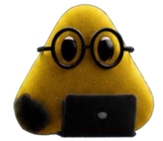
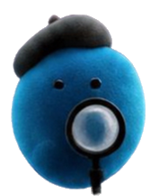
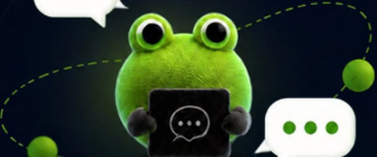

¿Qué son los Dots?
La nueva generación de asistentes de IA de OpenAI.
Agentes que mantienen el contexto y avanzan hacia tus objetivos.
Autonomía continua: Trabajan las 24 horas y siguen avanzando en los objetivos asignados incluso cuando cierras la computadora
«Los dots son una extensión de ti»

¿Cómo funcionan los Dots?
Una forma visual de entender el flujo de trabajo de la IA
- 1. Tu solicitudDescribes lo que necesitas.
- 2. ContextoInterpreta la conversación y las instrucciones disponibles.
- 3. AcciónGenera texto, analiza archivos o usa herramientas habilitadas.
- 4. ResultadoEntrega una respuesta que puedes revisar.
i«Los dots trabajan donde tú trabajas»

¿Qué tareas puede realizar un Dot?
Un asistente que te ayuda a avanzar hacia tus objetivos
- 01Organizar información y convertir ideas en planes
- 04Investigar y comparar información
- 02Redactar, resumir y mejorar textos
- 05Crear contenidos, propuestas y presentaciones
- 03Analizar archivos y extraer lo más importante
- 06Dar seguimiento a tareas y próximos pasos
Las capacidades dependen de las instrucciones, el contexto y las herramientas disponibles.
Siempre tienes el control

Los Dots
te entienden hacen tus tareas y te ayudan a avanzar en tus proyectosautonomamente
Descubre cómo empezar →